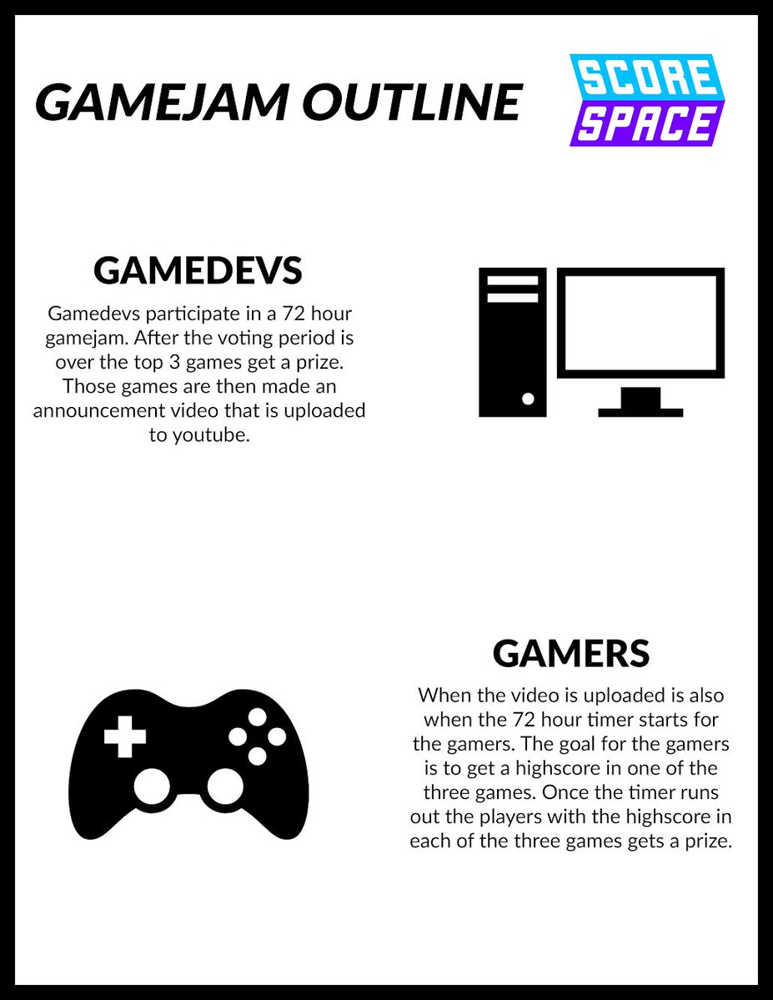

About
Scorespace is a new, innovative type of game jam which involves both game developers AND the gamers. Unlike most other jams, this jam doesn't
just involve the developers, but it also finds a way to get players involved too.
How it works
Scorespace begins like most other jams - developers have a 72 hour period to design, program and polish a game. No assets for the game can be
created before or after the 72 hour period is over. These games are then voted for in the week long voting period; the winners of this period
get a youtube video announcing them and their games, along with a prize!
After this, however, is when the jam really shines. Once the 72 hour period is over and the deadline has passed, the role is now passed onto the
players. Players must play the games submitted by the developers; whoever gets the highest score in these games wins a prize, and also get a youtube
video announcing it.
Here is an infographic showing how the jam will work:

How can I join?
To join, keep an eye out on the announcements page; new jams and events will be posted there!
Make sure to join our discord too: